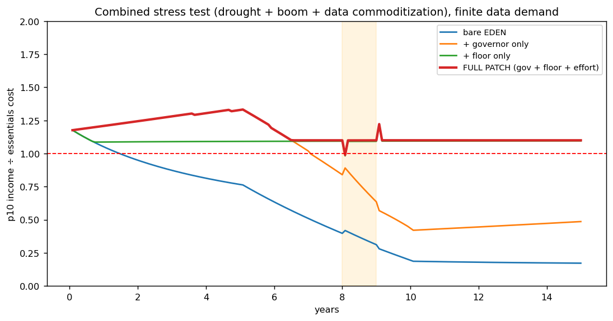
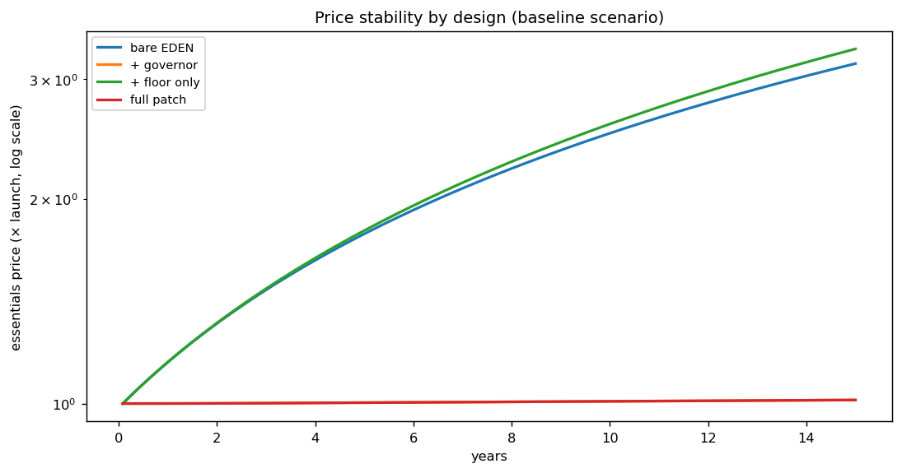
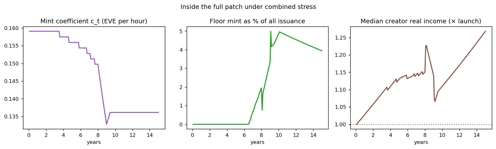

In plain language
Companion to RESULTS - EVE Sim v2. Companion added July 11, 2026 — the v1–v5-era runs predate the plain-language convention; written from the committed RESULTS as it stands today (including any verification-pass corrections already applied in that file), with no reinterpretation.
The question
v1 showed the bare design needs a patch. v2 asks whether the patched design actually holds. Same population, same horizon, same pre-registered bar (10th-percentile income below essentials for 3+ consecutive months = fail) — but every run now uses the pessimistic finite-data-demand assumption, plus a new kitchen-sink scenario stacking a drought-and-boom on top of data commoditization.
An honest correction first
v1's governor burned money from the stock without specifying who paid — too generous, because a transaction-fee burn can't raise enough early on. The implementable, committee-free version is a mint-rate governor: the EVE-per-hour coefficient is itself a slow protocol formula. The real price of monetary stability without demurrage (which Devan has ruled out): "1 hour = 1 EVE" becomes "1 hour = c_t EVE" — still neutral, still formulaic, no human dials, but the time-to-currency rate is a protocol variable, not an eternal constant.
What we found
The two patches fix different leaks, and only both together close the boat. Bare EDEN fails all 5 scenarios from around month 18, with ~10%/yr inflation halving creators' real income (0.49×). Governor-only gets inflation to 0.1%/yr but still fails commoditization and the combined scenario (month 85) — stable prices can't help when data income itself collapses. Floor-only passes all 5 but leaves ~10%/yr inflation that halves creator income anyway, and costs 9–15% of issuance permanently. The full patch — governor + floor + effort-weighting — passes all 5 with 0.1%/yr inflation, creators gaining 27–73% in real terms, and a floor that costs 0% of issuance in normal times and at most 3.9% under the kitchen sink. Stable prices are what make the floor nearly free — and the full patch is the only configuration where creators get richer.
The honest catch
The floor's one-month indexation lag causes a single-month dip to ~0.99 at drought onset — it passes under the 3-consecutive-month criterion, but a faster index or small buffer would remove it entirely. The v1 limits carry forward (quantity-theory pricing, no savings buffers, uniform data income, no fraud, fixed population), plus new ones: floor task capacity is assumed unlimited, the governor was tested at one adjustment speed, and the variable mint rate complicates the book's "time as universal constant" narrative and needs framing work.
One line
With both patches — a formulaic mint-rate governor for prices and a modest earnability floor for incomes — the design passes every scenario under pessimistic assumptions, with near-zero inflation, creators gaining 27–73% in real terms, and a floor costing at most 3.9% of issuance; each patch alone leaves a channel open, since the governor still fails commoditization and the floor still lets inflation halve creators' income.
Words used here (added July 18, 2026 — plain-language house rule; the text above is unchanged). Pre-registered — the pass/fail bar was written down before the runs, so results can't be graded on a curve afterward. 10th percentile — the person poorer than 90% of people; the test asks whether their income covers essentials. Issuance — newly created money entering circulation. Governor — an automatic, formula-driven limiter with no human dials; here it slowly adjusts the mint rate itself to keep prices stable. Coefficient (c_t) — the number you multiply by: how many EVE one hour of engagement creates, which the governor tunes over time. Demurrage — a small holding fee on idle money, like a parking meter for cash (ruled out here, which is why the mint-rate governor is the price paid instead). Indexation — automatically re-pegging a payment to current prices; the floor updates with a one-month lag, hence the brief dip at drought onset. Real terms / real income — what money actually buys after inflation, not the raw number. Quantity theory — the pricing rule assumed: more money chasing the same goods means higher prices. Effort-weighting — paying active engagement more than passive consumption, so low-effort farming mints less. Commoditization — data turning into an interchangeable bulk good whose price collapses.
Figures



Technical results
Same population, horizon, and pre-registered criterion as v1 (10th-percentile income below essentials for 3+ consecutive months = fail). All runs below use finite data demand — the pessimistic assumption — and include a new "combined" scenario: drought + engagement boom (yr 8) AND data commoditization (yrs 5–10) together.
A correction from v1 (honest accounting)
v1's governor burned EVE from the money stock without specifying who paid. That was too generous: a transaction-fee burn can't raise enough early on, because most minting accumulates in large creator balances while spending flows are far smaller. The implementable, committee-free version is a mint-rate governor: the EVE-per-hour coefficient c_t is itself a slow protocol formula that keeps net issuance tracking essentials supply growth. Consequence for the design: "1 hour = 1 EVE" becomes "1 hour = c_t EVE." Still neutral, still formulaic, no human dials — but the time-to-currency rate is a protocol variable, not an eternal constant. That is the real price of monetary stability without demurrage. (The alternative that preserves a fixed rate is demurrage on large balances, which Devan has ruled out.)
Verdicts — finite data demand, all scenarios
| Design | Passes all 5 scenarios? | Inflation (yrs 1–10) | Median creator real income at yr 15 | Floor cost (end, % of issuance) |
|---|---|---|---|---|
| Bare EDEN (death burn only) | No — fails all 5 (from month ~18) | ~10%/yr | 0.49× (halved by inflation) | — |
| + Governor only | No — fails commoditization & combined (mo. 85) | 0.1%/yr | 1.38× | — |
| + Floor only | Yes — all 5 | ~10%/yr | 0.51× (halved) | 9–15% |
| Full patch (governor + floor + effort-wt) | Yes — all 5 | 0.1%/yr | 1.27–1.73× | 0–3.9% |
The four findings
1. The patches are complements, not alternatives — each fixes a channel the other can't. The governor fixes the price channel (inflation) but is helpless against the income channel: when data commoditizes, the bottom decile's income collapses regardless of how stable prices are (fails at month 85). The floor fixes the income channel by construction but does nothing about inflation (~10%/yr forever), which silently halves creators' real income — an inflation tax that just moves the victim. Only together do both channels close.
2. With stable prices, the floor is nearly free. This is the most encouraging result. Under the full patch, the floor costs 0% of issuance in normal times and peaks at 3.9% even under the kitchen-sink scenario. Stable prices mean market data income usually clears the floor on its own; the floor is cheap insurance that activates only in genuine stress. (Floor-only, by contrast, runs at 9–15% of issuance permanently, because inflation keeps dragging market income below the line.) An honest caveat: the floor's one-month indexation lag causes a single-month dip to ~0.99 at drought onset — under the 3-consecutive-month criterion this passes, but a faster index or small buffer would remove it entirely.
3. The full patch is the only configuration where creators get richer in real terms. Bare EDEN and floor-only halve the median creator's purchasing power over 15 years — the system's own inflation eats the people it's designed to reward. Under the full patch, median creator real income rises 27–73% depending on scenario. Monetary discipline isn't a tax on creators; it's their protection.
4. Bare EDEN's failure is structural, not parametric. Across every scenario including the automation tailwind, bare EDEN goes underwater by month 18–22 and never recovers. The death burn is simply too slow relative to time-bounded minting. v1's sensitivity analysis already showed soft monetary assumptions can rescue it — but a system whose core promise depends on parameters nobody controls is not the system the book describes.
What the patched EDEN looks like (spec summary)
- Mint rule: 1 engaged hour mints
c_tEVE to the asset owner, with effort-weighting (passive engagement at 0.3×) and 15% dependency royalties. - Governor:
c_tadjusts by ≤1%/month, automatically, to keep net issuance tracking essentials supply growth. Formula constitutional; no committee. - Earnability floor: any verified person can earn up to 1.1× the essentials basket via protocol-priced baseline contributions (validation, sensing, public-benefit data), indexed to the basket. Top-up only; costs ~0–4% of issuance.
- Death burn + Legacy Assets: unchanged — kept for its values and long-run discipline, no longer asked to carry short-run stability.
Under the pre-registered criterion, this configuration passes every scenario tested, under pessimistic data-demand assumptions, with near-zero inflation and rising creator real incomes.
Limitations carried forward
Same as v1 (quantity-theory pricing, no savings buffers, uniform data income, no fraud, fixed population), plus: floor task capacity assumed unlimited (in reality useful baseline tasks must exist at scale); governor tested with one adjustment speed (±1%/mo band); the c_t variable rate may complicate the book's "time as universal constant" narrative and needs framing work. v3 candidates: adoption-phase dynamics (the launch decade), heterogeneous data value, an explicit test of the "data self-corrects harmful content" hypothesis, governance capture dynamics.
Files
eve_sim_v2.py— full model, rerunnablefig5_combined_stress.png— all four designs under the kitchen-sink scenariofig6_price_by_design.png— price stability comparison (log scale)fig7_full_patch_internals.png— mint coefficient, floor cost, creator real incomeresults_v2.json— all verdicts
Raw data